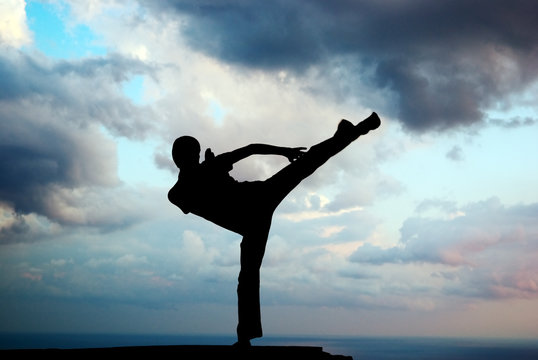
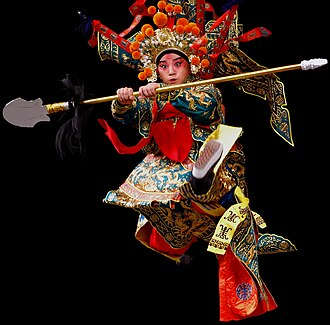

Home Page
60s Era Martial Arts
70s Era Martial Arts
80s Era Martial Arts
90s Era Martial Arts
Reserve a Movie!
Read Up On A Quick History Of Martial Arts in Movies!

Classic to Modern Martial Arts Films have served as the backbone to the grander Action Film Genre. From the more Peking dancelike 60s era to the fast-paced modern choreography, martial arts exists as a beauty to behold.
The beauty of martial arts filmography is the capability of recognizing the focal point of their choreography per decade. With each era of martial arts filmmaking that passes, a new precedence of style takes shape and influences other films of their respective era. Care to learn more? Click the links above for a more detailed analysis of each era's style!
Here at the Martial Arts Repository, we find, collect and even sell martial arts films from any and every era for any and everybody. We pride ourselves on our collection of martial arts films from as early as the 1960s to as recent as the 2020s. Every aspect of martial arts filmography, from the most prominent directors to the most minute of camoes matter to us, and we wish to share that with the world. If you have a film you'd like to reserve, click the link above to begin the process!